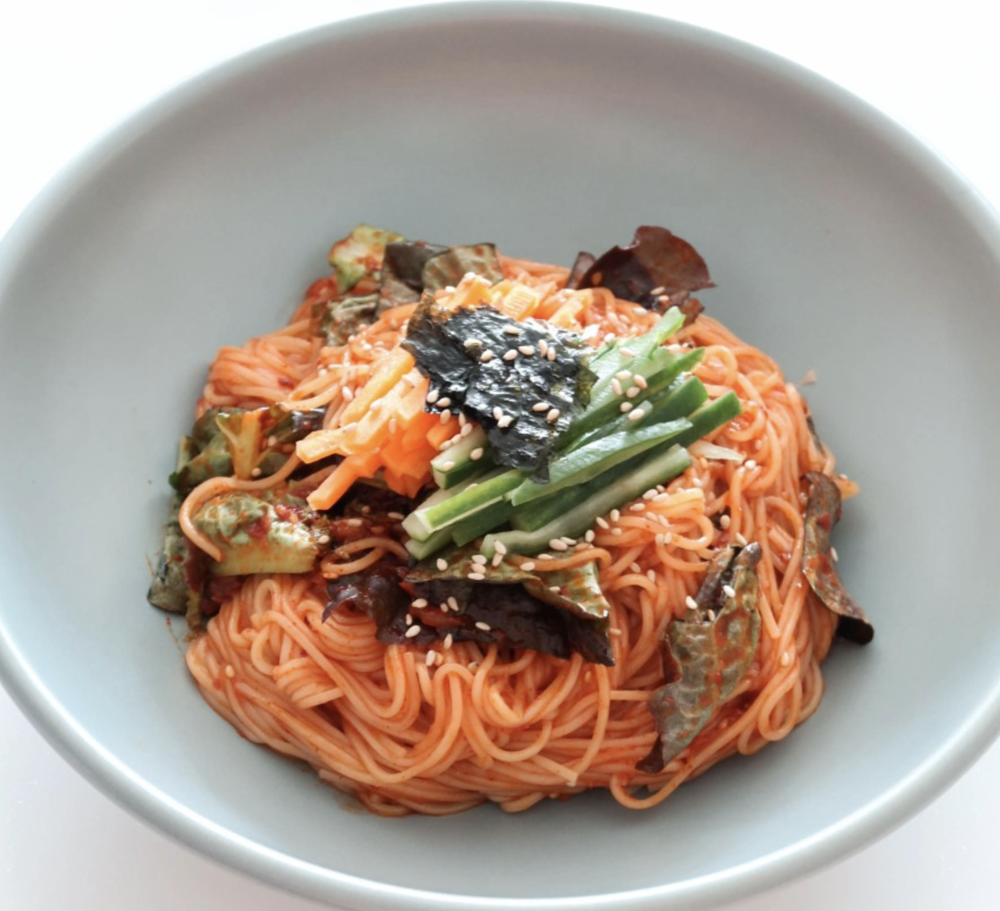

비빔 국수

설명
재료
- 소면 1~2인분
- 당근 1/4개
- 오이 1/4개
- 상추 2~3장
- 김 가루
양념
- 고추장 2 큰 술
- 고춧가루 1 큰 술
- 간장 1 큰 술
- 설탕 1 큰 술
- 다진 마늘 반 큰 술
- 식초 1 큰 술
- 매실액 1 큰 술
- 통깨
조리순서
- 먼저 준비해 놓은 오이 1/2개, 당근 1/2개는 1cm 정도의 두께로 채 썰어 준비해 주고 상추는ㄴ 4cm 정도의 두께로 썰어 준비해 주세요.
- 이어서 고추장 2 큰 술, 고춧가루 1 큰 술, 다진 마늘 반 큰 술, 간장 1 큰 술, 식초 1 큰 술, 매실액 1 큰 술, 설탕 1 큰 술, 통깨를 넣어주고 설탕이 잘 녹을 때까지 섞어주세요. 만들어 놓은 양념장은 바로 사용하기 보다 냉장고에 20분가량 넣어둔 후 사용하면 숙성되어 맛이 더 좋으니 참고해 주세요.
- 재료 손질과 양념장을 다 만들어 놓은 후에는 750ml 정도의 물과 소금 0.5T 정도 냄비에 담아주고 소면을 넣어 6분간 삶아 주세요.
- 면 삶는 중간 중간 차가운 물을 3차례 부어줘야 해요. 보글보글 끓어오르는 뜨거운 물에 찬물을 더해주면 면을 조금 더 탱글탱글하게 삶아낼 수 있어요.
- 면을 다 삶아낸 후에는 찬물에 한번 헹궈 물기를 제거해 주고 그릇에 담아 주세요.
- 그릇에 면을 담아 놓은 후 썰어 놓았던 상추를 올려주세요.
- 준비해 놓은 재료들을 모두 올려놓은 후에는 양념장을 알맞게 올려주고 면에 양념이 잘 배이도록 젓가락이나 손을 이용해 비벼주세요.
- 마지막으로 썰어 놓았던 당근과 오이를 고명으로 올려주면 완성입니다! 기호에 따라 김가루를 잘게 부숴놓은 후 올려줘도 좋고 계란 프라이를 반숙으로 만들어 곁들이면 조금 더 부드럽고 구수하게 즐길 수 있답니다.
original post